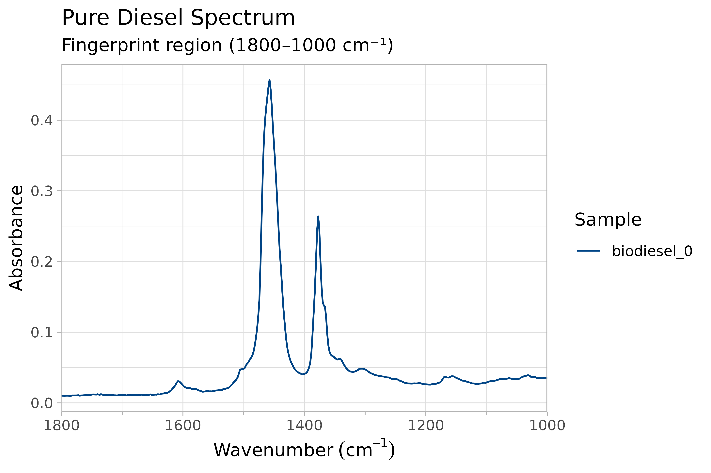
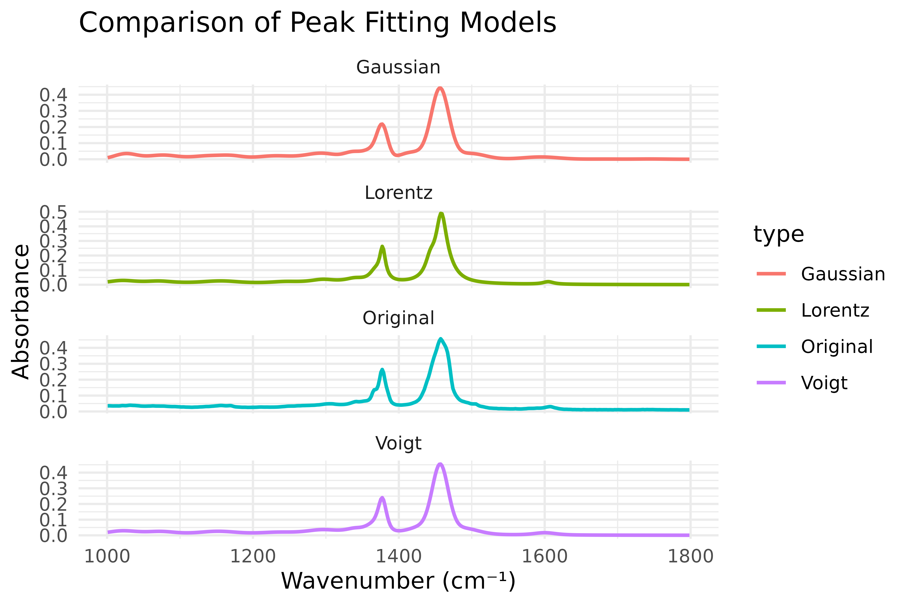
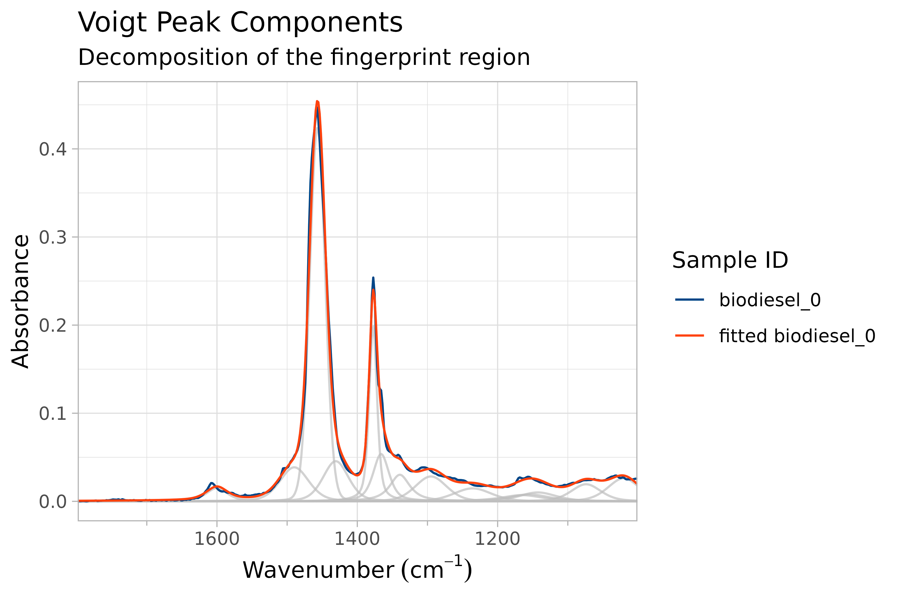
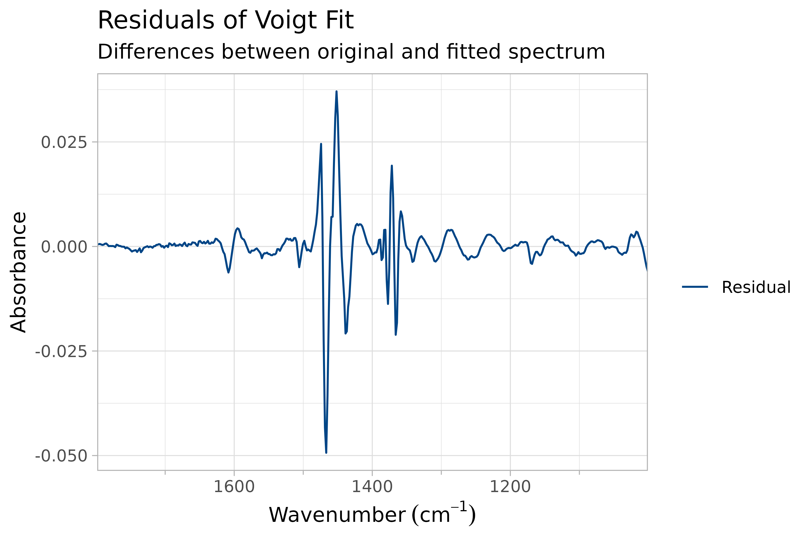
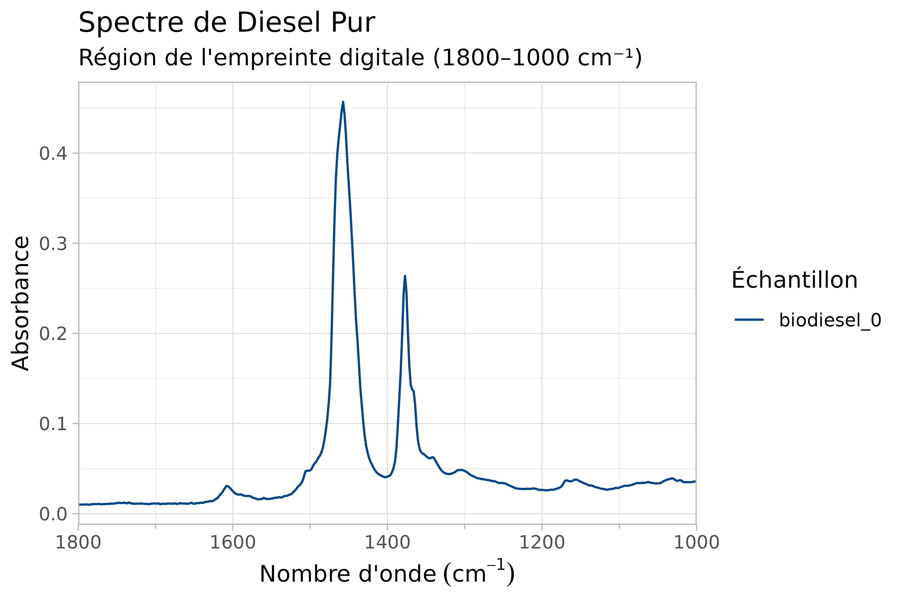
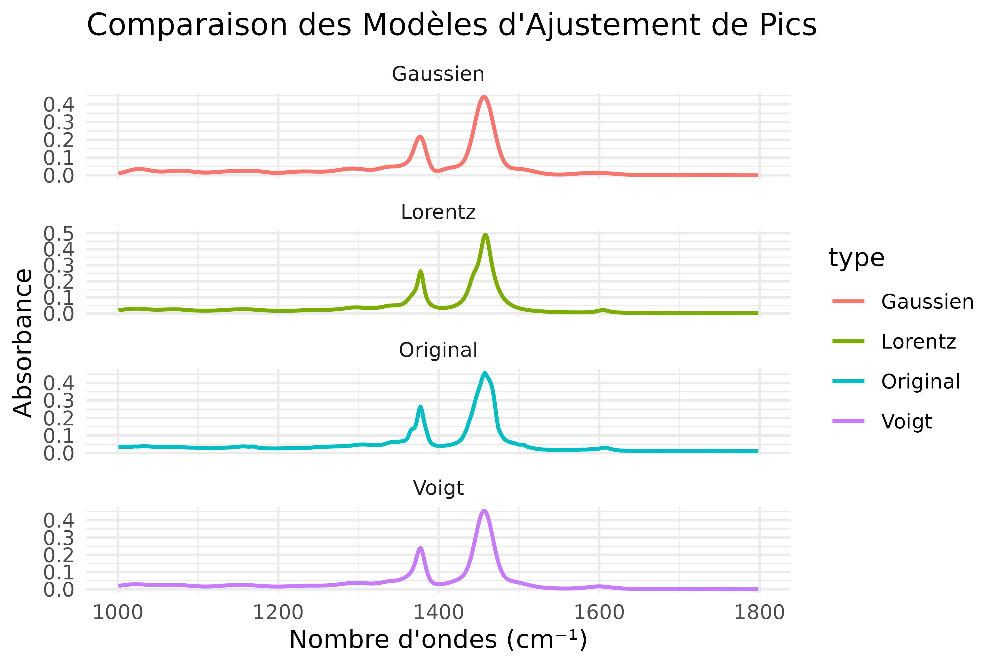
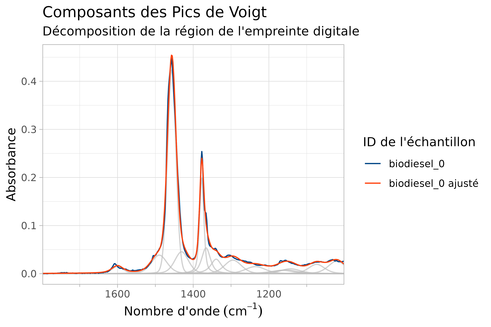
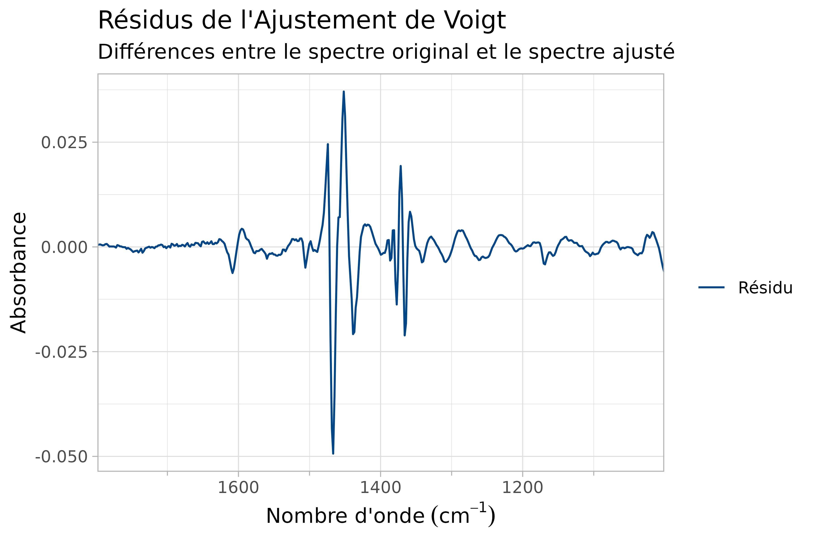

Identifying Functional Groups in Biodiesel Spectra
A common task in FTIR spectroscopy is identifying and quantifying functional groups within a complex mixture. Biodiesel-diesel blends provide an excellent example: the presence and concentration of biodiesel introduces characteristic carbonyl (C=O), ester (C-O-C), and alkene (=C-H) absorption bands that are absent in pure diesel.
This vignette walks through a complete peak fitting workflow — from
detecting overlapping peaks to evaluating fit quality — using the
built-in biodiesel dataset. The goal is not to catalogue
individual functions, but to demonstrate a practical analysis pipeline
that you can adapt to your own samples.
The Biodiesel Dataset
The biodiesel dataset contains ATR-FTIR spectra of
diesel samples with increasing biodiesel content (0% to 10% plus
commercial blends). Each spectrum was collected across the standard
mid-IR range, and the fingerprint region (approximately 1800–1000 cm⁻¹)
contains the most diagnostic features for distinguishing biodiesel from
conventional diesel.
data(biodiesel)
head(biodiesel)
#> PlotFTIR data:
#> Spectral range: 700.7395 - 710.0579 cm⁻¹
#> Resolution: variable
#> Intensity type: absorbance
#> Number of samples: 1
#> Sample IDs: biodiesel_0The data is in the long-format structure: wavenumber,
absorbance, and sample_id columns with 11
distinct samples. The biodiesel_0 sample (pure diesel)
serves as our baseline for comparison.
Visualizing the Raw Spectrum
Before attempting peak fitting, it is important to understand the raw spectral landscape. The fingerprint region of the pure diesel sample already shows several discernible features:
sample_spectrum <- biodiesel[biodiesel$sample_id == "biodiesel_0", ]
plot_ftir(
sample_spectrum,
plot_title = c("Pure Diesel Spectrum", "Fingerprint region (1800–1000 cm⁻¹)"),
legend_title = "Sample"
) |>
zoom_in_on_range(c(1800, 1000))
FTIR Spectra of pure diesel, from 1800-1000 cm-1.
Even this pure diesel sample reveals multiple overlapping bands. As biodiesel content increases, additional peaks emerge — particularly a carbonyl stretch near 1740 cm⁻¹ that is absent in pure diesel. This is the feature we will isolate and quantify.
Detecting Peaks Automatically
The first step in any peak fitting workflow is identifying candidate
peak locations. Rather than manually inspecting the spectrum,
find_ftir_peaks() combines several mathematical techniques
to detect peaks automatically.
How Peak Detection Works
The algorithm applies Savitzky-Golay smoothing to reduce noise, then identifies peaks through three complementary approaches:
- Second derivative minima — the primary method for locating sharp peaks
- First derivative zero-crossings — captures broad, asymmetric peaks that the second derivative may miss
- Signal maxima re-scanning — catches any peaks the derivative methods overlooked
Peaks detected by different methods within a configurable window are merged into single representative locations.
subset_spectrum <- sample_spectrum[
sample_spectrum$wavenumber < 1800 & sample_spectrum$wavenumber > 1000,
]
detected_peaks <- find_ftir_peaks(subset_spectrum)
detected_peaks
#> [1] 1034.336 1064.155 1153.611 1159.202 1164.793 1215.112 1304.568 1339.978
#> [9] 1358.615 1375.388 1408.934 1457.389 1503.981 1606.483 1697.802 1742.530The algorithm detected 16 peaks across the fingerprint region. These locations will serve as initial estimates for the fitting procedure. Note that the peak detection is performed on smoothed data, so the exact wavenumbers may differ slightly from visual inspection of the raw spectrum — this is expected and desirable, as it reduces the influence of noise on peak positioning.
This automatic detection step is heuristic rather than definitive. It
is useful for proposing starting peak centers, but it should not be read
as a validated deconvolution on its own. In crowded regions, shoulder
peaks, or broad overlapping bands, it is often worth tuning the
detection parameters or supplying peaklist directly.
Fitting Peaks: Choosing a Model
With peak locations identified, the next step is fitting each peak
with a mathematical function. The fit_peaks() function
supports four peak shapes, each appropriate for different spectral
characteristics. The choice of model affects both the accuracy of peak
parameters and the interpretability of the results.
Voigt Profile (Recommended Starting Point)
The Voigt profile is a convolution of Gaussian and Lorentzian functions. It is generally the most appropriate model for FTIR spectra because it accounts for both instrumental broadening (Gaussian component) and natural line width effects (Lorentzian component). The pseudo-Voigt approximation used here is computationally efficient while maintaining accuracy.
fitted_voigt <- fit_peaks(subset_spectrum, method = "voigt")
fit_peak_df(fitted_voigt)
#> sample_id peak wavenumber sigma eta amplitude mix_ratio
#> 1 biodiesel_0 1 1020.378 22.620411 0.41667439 0.70607178 0.041334785
#> 2 biodiesel_0 2 1073.967 21.214393 0.46904757 0.61732677 0.036139483
#> 3 biodiesel_0 3 1142.874 26.438354 0.57022481 0.41963039 0.024565961
#> 4 biodiesel_0 4 1154.669 28.496683 0.78763584 0.38042812 0.022270986
#> 5 biodiesel_0 5 1165.108 30.535238 0.90849016 0.37788038 0.022121836
#> 6 biodiesel_0 6 1235.631 26.689700 0.34232794 0.58102458 0.034014284
#> 7 biodiesel_0 7 1295.061 22.373833 0.32421289 0.93511505 0.054743413
#> 8 biodiesel_0 8 1339.359 14.374981 0.86994222 0.79205795 0.046368579
#> 9 biodiesel_0 9 1366.080 11.455864 0.64757152 1.03248712 0.060443759
#> 10 biodiesel_0 10 1377.426 5.654138 0.60234774 1.86168370 0.108986504
#> 11 biodiesel_0 11 1430.670 18.132006 0.38013045 1.25041276 0.073201541
#> 12 biodiesel_0 12 1456.775 11.032503 0.08075844 6.45034631 0.377615539
#> 13 biodiesel_0 13 1489.794 20.522159 0.38137781 1.19693280 0.070070722
#> 14 biodiesel_0 14 1600.188 15.319595 0.65711184 0.38245647 0.022389729
#> 15 biodiesel_0 15 1600.890 137.807663 0.52843850 0.05348896 0.003131345
#> 16 biodiesel_0 16 1644.661 161.435222 0.70224064 0.04443885 0.002601535
#> peak_shape
#> 1 voigt
#> 2 voigt
#> 3 voigt
#> 4 voigt
#> 5 voigt
#> 6 voigt
#> 7 voigt
#> 8 voigt
#> 9 voigt
#> 10 voigt
#> 11 voigt
#> 12 voigt
#> 13 voigt
#> 14 voigt
#> 15 voigt
#> 16 voigtThe output shows the fitted parameters for each peak: wavenumber
location (wavenumber), width (sigma), shape
parameter (eta), and relative contribution
(mix_ratio). These fitted components are model-based
summaries of the observed spectrum rather than direct proofs that each
component corresponds to a unique physical band. In practice, especially
where bands overlap strongly, component interpretation should be checked
against residuals, chemical context, and any prior expectations about
plausible peak centers.
Gaussian Profile
Gaussian functions are appropriate when instrumental broadening dominates the line shape, or when computational speed is a priority. They are simpler than Voigt profiles and work well for narrow, symmetric peaks with minimal overlap.
fitted_gauss <- fit_peaks(subset_spectrum, method = "gauss")
fit_peak_df(fitted_gauss)
#> sample_id peak wavenumber sigma amplitude mix_ratio peak_shape
#> 1 biodiesel_0 1 1025.538 15.636774 0.68023213 0.039822083 gauss
#> 2 biodiesel_0 2 1076.358 20.887670 0.72153205 0.042239858 gauss
#> 3 biodiesel_0 3 1133.338 19.869280 0.43510387 0.025471808 gauss
#> 4 biodiesel_0 4 1157.307 19.495302 0.23573096 0.013800138 gauss
#> 5 biodiesel_0 5 1172.412 15.262803 0.27931221 0.016351468 gauss
#> 6 biodiesel_0 6 1230.188 25.298231 0.71915802 0.042100878 gauss
#> 7 biodiesel_0 7 1294.259 21.939430 1.09007351 0.063814976 gauss
#> 8 biodiesel_0 8 1337.670 12.037717 0.64418390 0.037711750 gauss
#> 9 biodiesel_0 9 1363.620 11.191571 0.85552757 0.050084211 gauss
#> 10 biodiesel_0 10 1377.416 7.213309 1.83162791 0.107226981 gauss
#> 11 biodiesel_0 11 1418.432 16.741745 0.96820860 0.056680773 gauss
#> 12 biodiesel_0 12 1456.482 12.108292 7.06855671 0.413806751 gauss
#> 13 biodiesel_0 13 1497.974 20.799804 0.99740888 0.058390213 gauss
#> 14 biodiesel_0 14 1594.631 24.585315 0.47094531 0.027570034 gauss
#> 15 biodiesel_0 15 1682.710 23.211156 0.03869402 0.002265221 gauss
#> 16 biodiesel_0 16 1745.083 20.140979 0.04548636 0.002662858 gaussThe Gaussian fit produced similar peak locations to the Voigt model but with narrower widths. This is expected: without the Lorentzian long-tail component, Gaussian peaks are more confined and may underestimate the extent of peak shoulders.
Lorentzian Profile
Lorentzian functions describe natural line width effects and are appropriate when the broadening is dominated by the natural lifetime of molecular transitions. They produce the characteristic long tails that make them useful for analyzing heavily overlapped peaks.
fitted_lorentz <- fit_peaks(subset_spectrum, method = "lorentz")
fit_peak_df(fitted_lorentz)
#> sample_id peak wavenumber gam amplitude mix_ratio peak_shape
#> 1 biodiesel_0 1 1019.813 27.305105 0.76201142 0.044609598 lorentz
#> 2 biodiesel_0 2 1072.054 25.860577 0.62509668 0.036594348 lorentz
#> 3 biodiesel_0 3 1143.668 32.642247 0.38336747 0.022443061 lorentz
#> 4 biodiesel_0 4 1155.553 33.247652 0.36218859 0.021203209 lorentz
#> 5 biodiesel_0 5 1165.318 29.786260 0.35992089 0.021070453 lorentz
#> 6 biodiesel_0 6 1243.707 28.454746 0.57080796 0.033416184 lorentz
#> 7 biodiesel_0 7 1295.611 22.808534 0.93208295 0.054565908 lorentz
#> 8 biodiesel_0 8 1339.394 17.307772 0.77883798 0.045594657 lorentz
#> 9 biodiesel_0 9 1367.295 9.505631 1.00739772 0.058974978 lorentz
#> 10 biodiesel_0 10 1377.667 4.842035 1.76221485 0.103163408 lorentz
#> 11 biodiesel_0 11 1443.020 8.024792 1.45993827 0.085467563 lorentz
#> 12 biodiesel_0 12 1458.260 9.278235 6.71774273 0.393269434 lorentz
#> 15 biodiesel_0 15 1464.907 144.494620 0.03117200 0.001824868 lorentz
#> 16 biodiesel_0 16 1467.340 182.514359 0.02227288 0.001303897 lorentz
#> 13 biodiesel_0 13 1468.957 14.692718 1.04711720 0.061300232 lorentz
#> 14 biodiesel_0 14 1604.856 8.946643 0.25961239 0.015198203 lorentzThe Lorentzian fit yielded broader sigma values than the Gaussian model, reflecting the longer tails. For FTIR analysis, pure Lorentzian profiles are less commonly used than Voigt because real spectra rarely exhibit purely Lorentzian line shapes — they typically show a mix of both broadening mechanisms.
Doniach-Sunjić-Gauss Profile
The Doniach-Sunjić (DSG) function extends the Voigt profile with an
additional asymmetry parameter (alpha), making it
particularly useful for asymmetric peaks that arise from overlapping
transitions or instrumental effects. This is especially relevant for
FTIR spectra where bands often exhibit shoulders or asymmetry due to
Fermi resonance or overlapping functional groups.
fitted_dsg <- fit_peaks(subset_spectrum, method = "dsg")
fit_peak_df(fitted_dsg)
#> sample_id peak wavenumber sigma eta alpha amplitude
#> 1 biodiesel_0 1 1021.729 21.40672 0.2300115 1.040589e-01 0.68752458
#> 2 biodiesel_0 2 1073.426 20.95559 0.2654450 4.178485e-02 0.60471733
#> 3 biodiesel_0 3 1143.217 26.81239 0.4639632 1.536343e-06 0.41035251
#> 4 biodiesel_0 4 1154.571 28.32741 0.7240690 1.294041e-02 0.38246833
#> 5 biodiesel_0 5 1164.695 27.24771 0.9999984 3.076094e-02 0.38019901
#> 6 biodiesel_0 6 1236.692 26.40841 0.2236552 4.246214e-03 0.55029215
#> 7 biodiesel_0 7 1295.369 21.87505 0.2505226 1.536343e-06 0.90168887
#> 8 biodiesel_0 8 1340.207 15.76348 0.9166483 7.143751e-03 0.83265058
#> 9 biodiesel_0 9 1367.304 10.97263 0.5547412 6.767812e-03 1.08659683
#> 10 biodiesel_0 10 1377.527 5.08541 0.5266141 3.546382e-03 1.85128102
#> 11 biodiesel_0 11 1435.739 14.44531 0.2761618 2.297387e-02 1.43496036
#> 12 biodiesel_0 12 1457.101 10.32301 0.0713265 1.536343e-06 6.23193391
#> 13 biodiesel_0 13 1484.830 20.48238 0.1760789 1.536343e-06 1.24997679
#> 15 biodiesel_0 15 1577.526 135.43849 0.2820404 1.860073e-02 0.05411127
#> 16 biodiesel_0 16 1599.758 168.95306 0.7073261 2.394076e-03 0.04423006
#> 14 biodiesel_0 14 1602.472 12.82152 0.2434255 7.932407e-02 0.37879840
#> mix_ratio peak_shape
#> 1 0.040248996 doniach-sunjic-gauss
#> 2 0.035401303 doniach-sunjic-gauss
#> 3 0.024022816 doniach-sunjic-gauss
#> 4 0.022390423 doniach-sunjic-gauss
#> 5 0.022257573 doniach-sunjic-gauss
#> 6 0.032215149 doniach-sunjic-gauss
#> 7 0.052786581 doniach-sunjic-gauss
#> 8 0.048744948 doniach-sunjic-gauss
#> 9 0.063611445 doniach-sunjic-gauss
#> 10 0.108377511 doniach-sunjic-gauss
#> 11 0.084005308 doniach-sunjic-gauss
#> 12 0.364829262 doniach-sunjic-gauss
#> 13 0.073176018 doniach-sunjic-gauss
#> 15 0.003167776 doniach-sunjic-gauss
#> 16 0.002589312 doniach-sunjic-gauss
#> 14 0.022175579 doniach-sunjic-gaussThe DSG fit introduces the alpha parameter, which
controls the degree of asymmetry. When alpha is near zero,
the DSG profile reduces to a symmetric Voigt. Non-zero values indicate
asymmetric broadening — a common feature in complex mixtures like
diesel-biodiesel blends.
Comparing Fit Models
To understand how each model represents the data, we can overlay the fitted spectra on the original:
# Generate fitted spectra for each model
voigt_fit <- PlotFTIR:::.get_fit_spectra(subset_spectrum, fitted_voigt)
gauss_fit <- PlotFTIR:::.get_fit_spectra(subset_spectrum, fitted_gauss)
lorentz_fit <- PlotFTIR:::.get_fit_spectra(subset_spectrum, fitted_lorentz)
# Build comparison data frame
comparison_data <- data.frame(
wavenumber = rep(subset_spectrum$wavenumber, 4),
absorbance = c(subset_spectrum$absorbance, voigt_fit, gauss_fit, lorentz_fit),
type = rep(c("Original", "Voigt", "Gaussian", "Lorentz"),
each = nrow(subset_spectrum))
)
# Plot comparison
ggplot(comparison_data, aes(x = wavenumber, y = absorbance, color = type)) +
geom_line(linewidth = 0.8) +
facet_wrap(~type, ncol = 1, scales = "free_y") +
labs(
title = "Comparison of Peak Fitting Models",
x = "Wavenumber (cm⁻¹)",
y = "Absorbance"
) +
theme_minimal()
Plots of each type of peak fit, comparing the results against the original spectrum.
In this example, the Voigt and Lorentzian fits track the observed spectrum more closely than the Gaussian fit, with the Voigt model offering a reasonable balance of flexibility and computational efficiency. The Gaussian fit is simpler, but its symmetric, rapidly decaying shape can miss shoulders or broader tails. These comparisons are data-dependent rather than universal; for a new spectrum, residual patterns and subject-matter expectations matter more than any single default recommendation.
Visualizing Fit Components
Once a fit is complete, it is useful to examine the individual peak
components that comprise the overall model. The
plot_components() function decomposes the fitted spectrum
into its constituent peaks, revealing which functional groups contribute
to each region of the spectrum.
plot_components(
subset_spectrum,
fitted_voigt,
plot_fit = TRUE,
plot_title = c("Voigt Peak Components", "Decomposition of the fingerprint region")
)
Plotted components of a pseudo-voigt peak-shape fitted diesel.
Each colored line represents a single fitted peak component. The thick black line shows the sum of all components overlaid on the original spectrum. Peaks that are nearly identical in color to the original spectrum indicate a good fit. Gaps between the component sum and the original spectrum highlight regions where the current peak model is insufficient — these may indicate additional peaks that were not detected, or the need for a different peak shape.
Evaluating Fit Quality with Residuals
A good peak fit should leave residuals (the difference between observed and fitted values) that resemble random noise. Systematic patterns in the residuals indicate that the model is missing important features.
plot_fit_residuals(
subset_spectrum,
fitted_voigt,
plot_title = c("Residuals of Voigt Fit", "Differences between original and fitted spectrum")
)
Residuals of pseudo-voigt peak fitting
The residual plot shows the magnitude and pattern of the remaining error. Ideally, residuals should be centered around zero with no systematic structure. Large residuals at specific wavenumbers suggest either undetected peaks or a mismatch between the chosen peak shape and the actual spectral feature. In this case, the residuals are relatively small across most of the spectrum, confirming that the Voigt model provides a reasonable representation of the data.
Applying Peak Fitting Across Multiple Samples
Peak fitting is not limited to a single spectrum. When analyzing a series of samples — such as the biodiesel calibration standards — fitting each sample independently allows you to track how peak parameters change with concentration.
sample_ids <- unique(biodiesel$sample_id)
peak_table <- data.frame()
for (sid in sample_ids) {
sample_data <- biodiesel[biodiesel$sample_id == sid, ]
subset_data <- sample_data[
sample_data$wavenumber < 1800 & sample_data$wavenumber > 1000,
]
fitted <- fit_peaks(subset_data, method = "voigt")
peak_df <- fit_peak_df(fitted)
peak_df$sample_id <- sid
peak_table <- rbind(peak_table, peak_df)
}
head(peak_table)
#> sample_id peak wavenumber sigma eta amplitude mix_ratio
#> 1 biodiesel_0 1 1020.378 22.62041 0.4166744 0.7060718 0.04133478
#> 2 biodiesel_0 2 1073.967 21.21439 0.4690476 0.6173268 0.03613948
#> 3 biodiesel_0 3 1142.874 26.43835 0.5702248 0.4196304 0.02456596
#> 4 biodiesel_0 4 1154.669 28.49668 0.7876358 0.3804281 0.02227099
#> 5 biodiesel_0 5 1165.108 30.53524 0.9084902 0.3778804 0.02212184
#> 6 biodiesel_0 6 1235.631 26.68970 0.3423279 0.5810246 0.03401428
#> peak_shape
#> 1 voigt
#> 2 voigt
#> 3 voigt
#> 4 voigt
#> 5 voigt
#> 6 voigtThe resulting table contains fitted peak parameters for every sample. By filtering for specific peaks (e.g., the carbonyl peak near 1740 cm⁻¹), you can quantify how peak intensity, width, and position correlate with biodiesel concentration. This is the foundation of quantitative FTIR analysis: peak fitting converts qualitative spectral features into measurable, comparable numerical data.
Practical Considerations
Choosing a Peak Shape
| Peak Shape | Best For | Trade-offs |
|---|---|---|
| Voigt (default) | General FTIR spectra; combines instrumental and natural broadening | Slightly slower than Gaussian; recommended starting point |
| Gaussian | Narrow, symmetric peaks; computational efficiency | May underestimate peak shoulders and asymmetric features |
| Lorentzian | Peaks dominated by natural line width effects | Less common in FTIR; produces long tails that may overfit |
| Doniach-Sunjić-Gauss | Asymmetric peaks with shoulders; overlapping transitions | More parameters to tune; may overfit simple spectra |
Tips for Reliable Fitting
- Start with Voigt: It is a reasonable default for many FTIR spectra, not a guarantee of best fit.
- Inspect residuals: Always check the residual plot after fitting. Systematic patterns indicate a poor model.
-
Treat automatic peaks as starting values: In
crowded or asymmetric regions, consider tuning
find_ftir_peaks()arguments or supplyingpeaklistdirectly. -
Use explicit fitting arguments when needed:
sigma,gam,mix_ratio,eta,alpha,conv_cri, andmaxitcan be passed directly tofit_peaks(). -
Use
fixed_peaks = TRUEwhen you want to compare peak parameters across samples without the optimizer shifting peak locations. - Limit the wavenumber range to the region of interest to reduce computation time and avoid spurious peaks outside your analysis window.
References
The peak fitting methods in PlotFTIR are implemented via the
EMpeaksR package, which uses spectrum-adapted
expectation-maximization algorithms:
Matsumura, T., Nagamura, N., Akaho, S., Nagata, K., & Ando, Y. (2019). “Spectrum adapted expectation-maximization algorithm for high-throughput peak shift analysis”. Science and Technology of Advanced Materials, 20(1), pp 733-745. doi:10.1080/14686996.2019.1620123
Matsumura, T., Nagamura, N., Akaho, S., Nagata, K., & Ando, Y. (2021). “Spectrum adapted expectation-conditional maximization algorithm for extending high-throughput peak separation method in XPS analysis”. Science and Technology of Advanced Materials: Methods, 1(1), pp 45-55. doi:10.1080/27660400.2021.1899449
Savitzky, A.; Golay, M.J.E. (1964). “Smoothing and Differentiation of Data by Simplified Least Squares Procedures”. Analytical Chemistry 36, pp 1627-1639. doi:10.1021/ac60214a047
Identification des Groupes Fonctionnels dans les Spectres de Biodiesel
Une tâche courante en spectroscopie IRTF est l’identification et la quantification des groupes fonctionnels au sein d’un mélange complexe. Les mélanges diesel-biodiesel fournissent un excellent exemple : la présence et la concentration de biodiesel introduisent des bandes d’absorption caractéristiques du carbonyle (C=O), de l’ester (C-O-C) et de l’alcène (=C-H) qui sont absentes dans le diesel pur.
Ce didacticiel présente un flux de travail complet d’ajustement de
pics — de la détection des pics chevauchés à l’évaluation de la qualité
de l’ajustement — en utilisant l’ensemble de données
biodiesel intégré. L’objectif n’est pas de cataloguer les
fonctions individuelles, mais de démontrer un pipeline d’analyse
pratique que vous pouvez adapter à vos propres échantillons.
L’ensemble de données Biodiesel
L’ensemble de données biodiesel contient des spectres
IRTF-ATR de mélanges diesel avec du biodiesel croissant (0 % à 10 % plus
des mélanges commerciaux). Chaque spectre a été collecté sur la gamme
moyenne-IR standard, et la région de l’empreinte digitale (environ
1800–1000 cm⁻¹) contient les caractéristiques les plus diagnostiques
pour distinguer le biodiesel du diesel conventionnel.
data(biodiesel)
head(biodiesel)
#> PlotFTIR data:
#> Spectral range: 700.7395 - 710.0579 cm⁻¹
#> Resolution: variable
#> Intensity type: absorbance
#> Number of samples: 1
#> Sample IDs: biodiesel_0La sortie montre la structure au format long : les colonnes
wavenumber, absorbance et
sample_id avec 11 échantillons distincts. L’échantillon
biodiesel_0 (diesel pur) sert de référence pour la
comparaison.
Visualisation du Spectre Brut
Avant de tenter un ajustement de pics, il est important de comprendre le paysage spectral brut. La région de l’empreinte digitale de l’échantillon de diesel pur révèle déjà plusieurs caractéristiques discernables :
sample_spectrum <- biodiesel[biodiesel$sample_id == "biodiesel_0", ]
plot_ftir(
sample_spectrum,
plot_title = c("Spectre de Diesel Pur", "Région de l'empreinte digitale (1800–1000 cm⁻¹)"),
legend_title = "Échantillon",
lang = "fr"
) |>
zoom_in_on_range(c(1800, 1000))
Spectres FTIR du diesel pur, de 1800 à 1000 cm-1.
Même cet échantillon de diesel pur révèle plusieurs bandes superposées. À mesure que la teneur en biodiesel augmente, des pics supplémentaires apparaissent — en particulier une bande de carbonyle vers 1740 cm⁻¹ qui est absente dans le diesel pur. C’est la caractéristique que nous allons isoler et quantifier.
Détection Automatique des Pics
La première étape de tout flux de travail d’ajustement de pics est
l’identification des emplacements candidats des pics. Plutôt que
d’inspecter manuellement le spectre, find_ftir_peaks()
combine plusieurs techniques mathématiques pour détecter les pics
automatiquement.
Comment Fonctionne la Détection des Pics
L’algorithme applique un lissage de Savitzky-Golay pour réduire le bruit, puis identifie les pics par trois approches complémentaires :
- Minima de la dérivée seconde — la méthode principale pour localiser les pics nets
- Zéro-crossings de la dérivée première — capture les pics larges et asymétriques que la dérivée seconde peut manquer
- Rebalayage des maxima du signal — rattrape les pics que les méthodes de dérivée ont négligés
Les pics détectés par différentes méthodes dans une fenêtre configurable sont fusionnés en emplacements représentatifs uniques.
subset_spectrum <- sample_spectrum[
sample_spectrum$wavenumber < 1800 & sample_spectrum$wavenumber > 1000,
]
detected_peaks <- find_ftir_peaks(subset_spectrum)
detected_peaks
#> [1] 1034.336 1064.155 1153.611 1159.202 1164.793 1215.112 1304.568 1339.978
#> [9] 1358.615 1375.388 1408.934 1457.389 1503.981 1606.483 1697.802 1742.530L’algorithme a détecté 16 pics sur la région de l’empreinte digitale. Ces emplacements serviront d’estimations initiales pour la procédure d’ajustement. Notez que la détection des pics est effectuée sur des données lissées, donc les nombres d’ondes exacts peuvent différer légèrement de l’inspection visuelle du spectre brut — ce qui est attendu et souhaitable, car cela réduit l’influence du bruit sur le positionnement des pics.
Cette étape de détection automatique est heuristique plutôt que
définitive. Elle est utile pour proposer des centres de pics initiaux,
mais elle ne doit pas être interprétée à elle seule comme une
déconvolution validée. Dans les régions encombrées, pour les pics en
épaule ou pour les bandes larges qui se chevauchent, il est souvent
utile d’ajuster les paramètres de détection ou de fournir
peaklist directement.
Ajustement des Pics : Choix d’un Modèle
Une fois les emplacements des pics identifiés, l’étape suivante
consiste à ajuster chaque pic avec une fonction mathématique. La
fonction fit_peaks() prend en charge quatre formes de pics,
chacune appropriée pour différentes caractéristiques spectrales. Le
choix du modèle affecte à la fois la précision des paramètres des pics
et l’interprétabilité des résultats.
Profil de Voigt (Recommandé comme Point de Départ)
Le profil de Voigt est une convolution des fonctions de Gauss et de Lorentz. Il est généralement le modèle le plus approprié pour les spectres IRTF car il tient compte à la fois de l’élargissement instrumental (composante Gaussienne) et des effets de largeur de raie naturelle (composante de Lorentz). L’approximation pseudo-Voigt utilisée ici est efficace sur le plan computationnel tout en maintenant la précision.
fitted_voigt <- fit_peaks(subset_spectrum, method = "voigt")
fit_peak_df(fitted_voigt)
#> sample_id peak wavenumber sigma eta amplitude mix_ratio
#> 1 biodiesel_0 1 1020.378 22.620411 0.41667439 0.70607178 0.041334785
#> 2 biodiesel_0 2 1073.967 21.214393 0.46904757 0.61732677 0.036139483
#> 3 biodiesel_0 3 1142.874 26.438354 0.57022481 0.41963039 0.024565961
#> 4 biodiesel_0 4 1154.669 28.496683 0.78763584 0.38042812 0.022270986
#> 5 biodiesel_0 5 1165.108 30.535238 0.90849016 0.37788038 0.022121836
#> 6 biodiesel_0 6 1235.631 26.689700 0.34232794 0.58102458 0.034014284
#> 7 biodiesel_0 7 1295.061 22.373833 0.32421289 0.93511505 0.054743413
#> 8 biodiesel_0 8 1339.359 14.374981 0.86994222 0.79205795 0.046368579
#> 9 biodiesel_0 9 1366.080 11.455864 0.64757152 1.03248712 0.060443759
#> 10 biodiesel_0 10 1377.426 5.654138 0.60234774 1.86168370 0.108986504
#> 11 biodiesel_0 11 1430.670 18.132006 0.38013045 1.25041276 0.073201541
#> 12 biodiesel_0 12 1456.775 11.032503 0.08075844 6.45034631 0.377615539
#> 13 biodiesel_0 13 1489.794 20.522159 0.38137781 1.19693280 0.070070722
#> 14 biodiesel_0 14 1600.188 15.319595 0.65711184 0.38245647 0.022389729
#> 15 biodiesel_0 15 1600.890 137.807663 0.52843850 0.05348896 0.003131345
#> 16 biodiesel_0 16 1644.661 161.435222 0.70224064 0.04443885 0.002601535
#> peak_shape
#> 1 voigt
#> 2 voigt
#> 3 voigt
#> 4 voigt
#> 5 voigt
#> 6 voigt
#> 7 voigt
#> 8 voigt
#> 9 voigt
#> 10 voigt
#> 11 voigt
#> 12 voigt
#> 13 voigt
#> 14 voigt
#> 15 voigt
#> 16 voigtLa sortie montre les paramètres ajustés pour chaque pic :
l’emplacement du nombre d’ondes (wavenumber), la largeur
(sigma), le paramètre de forme (eta) et la
contribution relative (mix_ratio). Ces composantes ajustées
sont des résumés du spectre observé fondés sur un modèle, et non des
preuves directes qu’une composante correspond à une bande physique
unique. En pratique, surtout lorsque les bandes se chevauchent
fortement, l’interprétation des composantes doit être vérifiée à l’aide
des résidus, du contexte chimique et de toute attente préalable
concernant des centres de pics plausibles.
Profil Gaussien
Les fonctions gaussiennes sont appropriées lorsque l’élargissement instrumental domine la forme de raie, ou lorsque la vitesse computationnelle est une priorité. Elles sont plus simples que les profils de Voigt et fonctionnent bien pour les pics étroits et symétriques avec un chevauchement minimal.
fitted_gauss <- fit_peaks(subset_spectrum, method = "gauss")
fit_peak_df(fitted_gauss)
#> sample_id peak wavenumber sigma amplitude mix_ratio peak_shape
#> 1 biodiesel_0 1 1025.538 15.636774 0.68023213 0.039822083 gauss
#> 2 biodiesel_0 2 1076.358 20.887670 0.72153205 0.042239858 gauss
#> 3 biodiesel_0 3 1133.338 19.869280 0.43510387 0.025471808 gauss
#> 4 biodiesel_0 4 1157.307 19.495302 0.23573096 0.013800138 gauss
#> 5 biodiesel_0 5 1172.412 15.262803 0.27931221 0.016351468 gauss
#> 6 biodiesel_0 6 1230.188 25.298231 0.71915802 0.042100878 gauss
#> 7 biodiesel_0 7 1294.259 21.939430 1.09007351 0.063814976 gauss
#> 8 biodiesel_0 8 1337.670 12.037717 0.64418390 0.037711750 gauss
#> 9 biodiesel_0 9 1363.620 11.191571 0.85552757 0.050084211 gauss
#> 10 biodiesel_0 10 1377.416 7.213309 1.83162791 0.107226981 gauss
#> 11 biodiesel_0 11 1418.432 16.741745 0.96820860 0.056680773 gauss
#> 12 biodiesel_0 12 1456.482 12.108292 7.06855671 0.413806751 gauss
#> 13 biodiesel_0 13 1497.974 20.799804 0.99740888 0.058390213 gauss
#> 14 biodiesel_0 14 1594.631 24.585315 0.47094531 0.027570034 gauss
#> 15 biodiesel_0 15 1682.710 23.211156 0.03869402 0.002265221 gauss
#> 16 biodiesel_0 16 1745.083 20.140979 0.04548636 0.002662858 gaussL’ajustement Gaussien a produit des emplacements de pics similaires au modèle de Voigt mais avec des largeurs plus étroites. Cela est attendu : sans la composante de queue longue de Lorentz, les pics gaussiens sont plus confinés et peuvent sous-estimer l’étendue des épaules de pics.
Profil de Lorentz
Les fonctions de Lorentz décrivent les effets de largeur de raie naturelle et sont appropriées lorsque l’élargissement est dominé par la durée de vie naturelle des transitions moléculaires. Elles produisent les queues longues caractéristiques qui les rendent utiles pour l’analyse des pics fortement chevauchés.
fitted_lorentz <- fit_peaks(subset_spectrum, method = "lorentz")
fit_peak_df(fitted_lorentz)
#> sample_id peak wavenumber gam amplitude mix_ratio peak_shape
#> 1 biodiesel_0 1 1019.813 27.305105 0.76201142 0.044609598 lorentz
#> 2 biodiesel_0 2 1072.054 25.860577 0.62509668 0.036594348 lorentz
#> 3 biodiesel_0 3 1143.668 32.642247 0.38336747 0.022443061 lorentz
#> 4 biodiesel_0 4 1155.553 33.247652 0.36218859 0.021203209 lorentz
#> 5 biodiesel_0 5 1165.318 29.786260 0.35992089 0.021070453 lorentz
#> 6 biodiesel_0 6 1243.707 28.454746 0.57080796 0.033416184 lorentz
#> 7 biodiesel_0 7 1295.611 22.808534 0.93208295 0.054565908 lorentz
#> 8 biodiesel_0 8 1339.394 17.307772 0.77883798 0.045594657 lorentz
#> 9 biodiesel_0 9 1367.295 9.505631 1.00739772 0.058974978 lorentz
#> 10 biodiesel_0 10 1377.667 4.842035 1.76221485 0.103163408 lorentz
#> 11 biodiesel_0 11 1443.020 8.024792 1.45993827 0.085467563 lorentz
#> 12 biodiesel_0 12 1458.260 9.278235 6.71774273 0.393269434 lorentz
#> 15 biodiesel_0 15 1464.907 144.494620 0.03117200 0.001824868 lorentz
#> 16 biodiesel_0 16 1467.340 182.514359 0.02227288 0.001303897 lorentz
#> 13 biodiesel_0 13 1468.957 14.692718 1.04711720 0.061300232 lorentz
#> 14 biodiesel_0 14 1604.856 8.946643 0.25961239 0.015198203 lorentzL’ajustement de Lorentz a produit des valeurs sigma plus larges que le modèle gaussien, reflétant les queues plus longues. Pour l’analyse IRTF, les profils de Lorentz purs sont moins couramment utilisés que Voigt car les spectres réels présentent rarement des formes de raie purement lorentziennes — elles montrent généralement un mélange des deux mécanismes d’élargissement.
Profil Doniach-Sunjić-Gauss
La fonction Doniach-Sunjić (DSG) étend le profil de Voigt avec un
paramètre d’asymétrie supplémentaire (alpha), ce qui la
rend particulièrement utile pour les pics asymétriques qui résultent de
transitions chevauchées ou d’effets instrumentaux. Ceci est
particulièrement pertinent pour les spectres IRTF où les bandes
présentent souvent des épaules ou une asymétrie dues à la résonance de
Fermi ou à des groupes fonctionnels chevauchés.
fitted_dsg <- fit_peaks(subset_spectrum, method = "dsg")
fit_peak_df(fitted_dsg)
#> sample_id peak wavenumber sigma eta alpha amplitude
#> 1 biodiesel_0 1 1021.729 21.40672 0.2300115 1.040589e-01 0.68752458
#> 2 biodiesel_0 2 1073.426 20.95559 0.2654450 4.178485e-02 0.60471733
#> 3 biodiesel_0 3 1143.217 26.81239 0.4639632 1.536343e-06 0.41035251
#> 4 biodiesel_0 4 1154.571 28.32741 0.7240690 1.294041e-02 0.38246833
#> 5 biodiesel_0 5 1164.695 27.24771 0.9999984 3.076094e-02 0.38019901
#> 6 biodiesel_0 6 1236.692 26.40841 0.2236552 4.246214e-03 0.55029215
#> 7 biodiesel_0 7 1295.369 21.87505 0.2505226 1.536343e-06 0.90168887
#> 8 biodiesel_0 8 1340.207 15.76348 0.9166483 7.143751e-03 0.83265058
#> 9 biodiesel_0 9 1367.304 10.97263 0.5547412 6.767812e-03 1.08659683
#> 10 biodiesel_0 10 1377.527 5.08541 0.5266141 3.546382e-03 1.85128102
#> 11 biodiesel_0 11 1435.739 14.44531 0.2761618 2.297387e-02 1.43496036
#> 12 biodiesel_0 12 1457.101 10.32301 0.0713265 1.536343e-06 6.23193391
#> 13 biodiesel_0 13 1484.830 20.48238 0.1760789 1.536343e-06 1.24997679
#> 15 biodiesel_0 15 1577.526 135.43849 0.2820404 1.860073e-02 0.05411127
#> 16 biodiesel_0 16 1599.758 168.95306 0.7073261 2.394076e-03 0.04423006
#> 14 biodiesel_0 14 1602.472 12.82152 0.2434255 7.932407e-02 0.37879840
#> mix_ratio peak_shape
#> 1 0.040248996 doniach-sunjic-gauss
#> 2 0.035401303 doniach-sunjic-gauss
#> 3 0.024022816 doniach-sunjic-gauss
#> 4 0.022390423 doniach-sunjic-gauss
#> 5 0.022257573 doniach-sunjic-gauss
#> 6 0.032215149 doniach-sunjic-gauss
#> 7 0.052786581 doniach-sunjic-gauss
#> 8 0.048744948 doniach-sunjic-gauss
#> 9 0.063611445 doniach-sunjic-gauss
#> 10 0.108377511 doniach-sunjic-gauss
#> 11 0.084005308 doniach-sunjic-gauss
#> 12 0.364829262 doniach-sunjic-gauss
#> 13 0.073176018 doniach-sunjic-gauss
#> 15 0.003167776 doniach-sunjic-gauss
#> 16 0.002589312 doniach-sunjic-gauss
#> 14 0.022175579 doniach-sunjic-gaussL’ajustement DSG introduit le paramètre alpha, qui
contrôle le degré d’asymétrie. Lorsque alpha est proche de
zéro, le profil DSG se réduit à un Voigt symétrique. Des valeurs non
nulles indiquent un élargissement asymétrique — une caractéristique
commune dans les mélanges complexes comme les mélanges
diesel-biodiesel.
Comparaison des Modèles d’Ajustement
Pour comprendre comment chaque modèle représente les données, nous pouvons superposer les spectres ajustés sur l’original :
# Générer les spectres ajustés pour chaque modèle
voigt_fit <- PlotFTIR:::.get_fit_spectra(subset_spectrum, fitted_voigt)
gauss_fit <- PlotFTIR:::.get_fit_spectra(subset_spectrum, fitted_gauss)
lorentz_fit <- PlotFTIR:::.get_fit_spectra(subset_spectrum, fitted_lorentz)
# Construire le tableau de comparaison
comparison_data <- data.frame(
wavenumber = rep(subset_spectrum$wavenumber, 4),
absorbance = c(subset_spectrum$absorbance, voigt_fit, gauss_fit, lorentz_fit),
type = rep(c("Original", "Voigt", "Gaussien", "Lorentz"),
each = nrow(subset_spectrum))
)
# Tracer la comparaison
ggplot(comparison_data, aes(x = wavenumber, y = absorbance, color = type)) +
geom_line(linewidth = 0.8) +
facet_wrap(~type, ncol = 1, scales = "free_y") +
labs(
title = "Comparaison des Modèles d'Ajustement de Pics",
x = "Nombre d'ondes (cm⁻¹)",
y = "Absorbance"
) +
theme_minimal()
Graphiques de chaque type d’ajustement de pic, comparant les résultats au spectre original.
Dans cet exemple, les ajustements de Voigt et de Lorentz suivent le spectre observé plus étroitement que l’ajustement gaussien, le modèle de Voigt offrant un compromis raisonnable entre souplesse et efficacité computationnelle. L’ajustement gaussien est plus simple, mais sa forme symétrique à décroissance rapide peut manquer des épaules ou des queues plus larges. Ces comparaisons dépendent des données plutôt que d’être universelles ; pour un nouveau spectre, les motifs de résidus et les attentes du domaine importent davantage qu’une recommandation unique par défaut.
Visualisation des Composants de l’Ajustement
Une fois un ajustement terminé, il est utile d’examiner les
composants individuels des pics qui composent le modèle global. La
fonction plot_components() décompose le spectre ajusté en
ses pics constitutifs, révélant quels groupes fonctionnels contribuent à
chaque région du spectre.
plot_components(
subset_spectrum,
fitted_voigt,
plot_fit = TRUE,
plot_title = c("Composants des Pics de Voigt", "Décomposition de la région de l'empreinte digitale"),
lang = "fr"
)
Composantes tracées d’un moteur diesel équipé d’un profil de pic pseudo-Voigt.
Chaque ligne colorée représente un pic ajusté individuel. La ligne épaisse noire montre la somme de tous les composants superposée sur le spectre original. Les pics qui sont presque identiques en couleur au spectre original indiquent un bon ajustement. Les écarts entre la somme des composants et le spectre original mettent en évidence les régions où le modèle de pic actuel est insuffisant — ceux-ci peuvent indiquer des pics supplémentaires qui n’ont pas été détectés, ou le besoin d’une forme de pic différente.
Évaluation de la Qualité de l’Ajustement par les Résidus
Un bon ajustement de pics devrait laisser des résidus (la différence entre les valeurs observées et ajustées) qui ressemblent à du bruit aléatoire. Des motifs systématiques dans les résidus indiquent que le modèle manque de caractéristiques importantes.
plot_fit_residuals(
subset_spectrum,
fitted_voigt,
plot_title = c("Résidus de l'Ajustement de Voigt", "Différences entre le spectre original et le spectre ajusté"),
lang = "fr"
)
Résidus de l’ajustement de pic pseudo-Voigt
Le graphique de résidus montre l’amplitude et le motif de l’erreur restante. Idéalement, les résidus devraient être centrés autour de zéro sans structure systématique. De grands résidus à des nombres d’ondes spécifiques indiquent soit des pics non détectés, soit un manque de correspondance entre la forme de pic choisie et la caractéristique spectrale réelle. Dans ce cas, les résidus sont relativement petits sur la majeure partie du spectre, confirmant que le modèle de Voigt fournit une représentation raisonnable des données.
Application de l’Ajustement de Pics à Plusieurs Échantillons
L’ajustement de pics n’est pas limité à un seul spectre. Lorsqu’on analyse une série d’échantillons — comme les étalons de calibration biodiesel — l’ajustement de chaque échantillon indépendamment permet de suivre comment les paramètres des pics changent avec la concentration.
sample_ids <- unique(biodiesel$sample_id)
peak_table <- data.frame()
for (sid in sample_ids) {
sample_data <- biodiesel[biodiesel$sample_id == sid, ]
subset_data <- sample_data[
sample_data$wavenumber < 1800 & sample_data$wavenumber > 1000,
]
fitted <- fit_peaks(subset_data, method = "voigt")
peak_df <- fit_peak_df(fitted)
peak_df$sample_id <- sid
peak_table <- rbind(peak_table, peak_df)
}
head(peak_table)
#> sample_id peak wavenumber sigma eta amplitude mix_ratio
#> 1 biodiesel_0 1 1020.378 22.62041 0.4166744 0.7060718 0.04133478
#> 2 biodiesel_0 2 1073.967 21.21439 0.4690476 0.6173268 0.03613948
#> 3 biodiesel_0 3 1142.874 26.43835 0.5702248 0.4196304 0.02456596
#> 4 biodiesel_0 4 1154.669 28.49668 0.7876358 0.3804281 0.02227099
#> 5 biodiesel_0 5 1165.108 30.53524 0.9084902 0.3778804 0.02212184
#> 6 biodiesel_0 6 1235.631 26.68970 0.3423279 0.5810246 0.03401428
#> peak_shape
#> 1 voigt
#> 2 voigt
#> 3 voigt
#> 4 voigt
#> 5 voigt
#> 6 voigtLe tableau résultant contient les paramètres de pics ajustés pour chaque échantillon. En filtrant pour des pics spécifiques (par exemple, le pic de carbonyle vers 1740 cm⁻¹), vous pouvez quantifier comment l’intensité, la largeur et la position du pic corrélatent avec la concentration en biodiesel. C’est le fondement de l’analyse quantitative IRTF : l’ajustement de pics convertit les caractéristiques spectrales qualitatives en données numériques mesurables et comparables.
Considérations Pratiques
Choisir une Forme de Pic
| Forme de Pic | Idéale Pour | Compromis |
|---|---|---|
| Voigt (défaut) | Spectres IRTF généraux ; combine l’élargissement instrumental et naturel | Légèrement plus lent que Gaussien ; point de départ recommandé |
| Gaussien | Pics étroits et symétriques ; efficacité computationnelle | Peut sous-estimer les épaules de pics et les caractéristiques asymétriques |
| Lorentzien | Pics dominés par les effets de largeur de raie naturelle | Moins courant en IRTF ; produit des queues longues qui peuvent surajuster |
| Doniach-Sunjić-Gauss | Pics asymétriques avec épaules ; transitions chevauchées | Plus de paramètres à régler ; peut surajuster les spectres simples |
Conseils pour un Ajustement Fiable
- Commencer par Voigt : c’est un défaut raisonnable pour de nombreux spectres IRTF, sans garantir le meilleur ajustement.
- Inspecter les résidus : vérifier toujours le graphique de résidus après l’ajustement. Des motifs systématiques indiquent un mauvais modèle.
-
Traiter les pics automatiques comme des valeurs de
départ : dans les régions encombrées ou asymétriques, envisagez
d’ajuster les arguments de
find_ftir_peaks()ou de fournirpeaklistdirectement. -
Utiliser des arguments d’ajustement explicites si
nécessaire :
sigma,gam,mix_ratio,eta,alpha,conv_crietmaxitpeuvent être passés directement àfit_peaks(). -
Utiliser
fixed_peaks = TRUElorsque vous voulez comparer les paramètres des pics entre échantillons sans que l’optimiseur ne déplace les emplacements des pics. - Limiter la gamme de nombres d’ondes à la région d’intérêt pour réduire le temps de calcul et éviter les pics aberrants en dehors de votre fenêtre d’analyse.
Références
Les méthodes d’ajustement de pics dans PlotFTIR sont implémentées via
le package EMpeaksR, qui utilise des algorithmes
d’espérance-maximisation adaptés aux spectres :
Matsumura, T., Nagamura, N., Akaho, S., Nagata, K., & Ando, Y. (2019). “Spectrum adapted expectation-maximization algorithm for high-throughput peak shift analysis”. Science and Technology of Advanced Materials, 20(1), pp 733-745. doi:10.1080/14686996.2019.1620123
Matsumura, T., Nagamura, N., Akaho, S., Nagata, K., & Ando, Y. (2021). “Spectrum adapted expectation-conditional maximization algorithm for extending high-throughput peak separation method in XPS analysis”. Science and Technology of Advanced Materials: Methods, 1(1), pp 45-55. doi:10.1080/27660400.2021.1899449
Savitzky, A.; Golay, M.J.E. (1964). “Smoothing and Differentiation of Data by Simplified Least Squares Procedures”. Analytical Chemistry 36, pp 1627-1639. doi:10.1021/ac60214a047